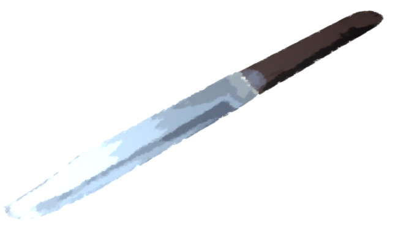

呪いの思考

再びバギーで荒田集落へ向かう。
視覚で感じるほどの強烈な直感は初めてだった。
まだ鼓動が強いままだ。
もう一度……もう一度よく思い返してみる。
視覚で感じるほどの強烈な直感は初めてだった。
まだ鼓動が強いままだ。
もう一度……もう一度よく思い返してみる。

 video: 盗視.wmv
video: 盗視.wmv最初に見えたのは、おそらく荒田集落のどこかにあるほら穴。
きっと五島がいたのは、そのほら穴の中。
あそこはとても危険な――。
きっと五島がいたのは、そのほら穴の中。
あそこはとても危険な――。
video: 盗視.wmvいや、そうじゃない。
五島に『危険だから離れろ』と反射的に言ったけど、よく思い返してみれば五島の姿は見えなかった。
確か――。
五島に『危険だから離れろ』と反射的に言ったけど、よく思い返してみれば五島の姿は見えなかった。
確か――。
 video: 盗視.wmv
video: 盗視.wmv

1人の男と、1人の女がいた。
そして、その2人の前には、怪しげな壺。
その後、女の人が血まみれになり――。
男の人にはなんとなく見覚えがある……。
そして、その2人の前には、怪しげな壺。
その後、女の人が血まみれになり――。
男の人にはなんとなく見覚えがある……。
video: 盗視.wmvおそらく、幸太郎さんだ。
女の人に見覚えはない。
幸太郎さんのそばにいる女性と言えば、あの人がサクラさんだろうか。
女の人に見覚えはない。
幸太郎さんのそばにいる女性と言えば、あの人がサクラさんだろうか。
video: 盗視.wmvやっぱり今までの直感とは明らかに違う。
五島の危険を予知したのではなく、幸太郎さんとサクラさんの姿が見えた。
しかしサクラさんはもう10年前に亡くなっているのだから……。
さっきのは、どちらかと言えば古い感じ。
五島の危険を予知したのではなく、幸太郎さんとサクラさんの姿が見えた。
しかしサクラさんはもう10年前に亡くなっているのだから……。
さっきのは、どちらかと言えば古い感じ。
video: 盗視.wmv例えば、『過去』のできごと。
過去にあそこで起こった出来事が、見えたような気がした。
過去にあそこで起こった出来事が、見えたような気がした。
video: 盗視.wmv今、あそこが危険な場所と言う感じは……
うーん……それとはちょっと違ったかもしれない。
自分でも漠然としているが、一言で言うなら『危険があった場所』だろうか。
自分でも漠然としているが、一言で言うなら『危険があった場所』だろうか。
video: 盗視.wmv――五島が言っていた。
『どうしても幸太郎さんに簡単にたどり着いてしまって、逆に変だ』と。
これに反論するなら『火のないところに煙は立たない』だ。
幸太郎さんが仮に犯人でないとしても、無関係ではないだろう。
『どうしても幸太郎さんに簡単にたどり着いてしまって、逆に変だ』と。
これに反論するなら『火のないところに煙は立たない』だ。
幸太郎さんが仮に犯人でないとしても、無関係ではないだろう。
video: 盗視.wmvあの怪しげな壺……
幸太郎さん……
血まみれになったサクラさん。
私1人では、それを考察し解答を導き出すことは難しい。
間違いなく、五島に相談すべきことだ。
私1人では、それを考察し解答を導き出すことは難しい。
間違いなく、五島に相談すべきことだ。
video: 盗視.wmvいや……その前に、城崎さんに聞いてみようか……。
もし過去の出来事なら、何か知っているかもしれない。
もし過去の出来事なら、何か知っているかもしれない。
「あの！ 城崎さん！」
バギーのエンジン音に声を消されまいと、大声を出した。
「………… なんだい！？」
若干の間をおいて声が返ってきた。
バギーのエンジン音に声を消されまいと、大声を出した。
「………… なんだい！？」
若干の間をおいて声が返ってきた。
「さっき五島と電話したら『秘密の場所にいる』って言ってたんですけど、心当たりはありますか！？」
「秘密の場所……？ いや……それだけだと何とも言えないな……」
それもそうか。秘密の場所なら、住人にも知られていない可能性がある。
城崎さんがとぼけている可能性もあるが――。
「秘密の場所……？ いや……それだけだと何とも言えないな……」
それもそうか。秘密の場所なら、住人にも知られていない可能性がある。
城崎さんがとぼけている可能性もあるが――。
「じゃあ、理科の実験で使うような三脚と、壺って見覚えないですか？」
ここまでピンポイントな話だと、逆に魔女の力と思われるかもしれない。
でも、それならそれでいい。
少しでも五島が考察できるネタになる情報を聞き出さなくては。
ここまでピンポイントな話だと、逆に魔女の力と思われるかもしれない。
でも、それならそれでいい。
少しでも五島が考察できるネタになる情報を聞き出さなくては。
「ああ、それなら知ってる！
法要で使う祭具だよ！ 明日見ることになると思うぞ！」
法要で使う祭具……？
それを幸太郎さんとサクラさんが持ち出して、何をしていたのだろう。
法要で使う祭具……？
それを幸太郎さんとサクラさんが持ち出して、何をしていたのだろう。
「その祭具って、法要ではどう使うんですか？」
「なんていうのかな……お焼香みたいなもんだよ。 参列者が壺の中に液体を少し入れるだけ。明日もみんなの真似したら簡単にできるよ」
「その壺って、誰でも持ち出せますか？」
「なんていうのかな……お焼香みたいなもんだよ。 参列者が壺の中に液体を少し入れるだけ。明日もみんなの真似したら簡単にできるよ」
「その壺って、誰でも持ち出せますか？」
「うーん、どうだろう……。
基本的に『魔女』の役職しか触ることはできないけど、持ち出そうと思えば誰でも持ち出せるんじゃないかな。
でも壺を使いたいだけなら、わざわざ祭具を持ち出す必要性は感じないけど……」
何とも言い難いな……。
何とも言い難いな……。
つまり祭具用の壺も特段変わったものではない、と言うことになるのだろうか。
それにしても城崎さん、ずいぶんとしゃべってくれるな……。
私の予感に関与しない、ただの質問なら答えてくれるということだろうか。
それにしても城崎さん、ずいぶんとしゃべってくれるな……。
私の予感に関与しない、ただの質問なら答えてくれるということだろうか。
「あの、サクラさんって魔女の力――危険予知能力を持っていたんですよね？
いつからですか？」
「なつみちゃん、その話は……」
「でも、これはみんな知ってることなんですよね？ 私もそれくらい知ってもいいんじゃないですか？」
「…………」
「なつみちゃん、その話は……」
「でも、これはみんな知ってることなんですよね？ 私もそれくらい知ってもいいんじゃないですか？」
「…………」

城崎さんはバギーを停めた。
ここは駅だろうか。
おそらくここが、当初おばさんと合流する予定であった荒田駅だろう。
全く人気もなく、街灯すらない。
ここは駅だろうか。
おそらくここが、当初おばさんと合流する予定であった荒田駅だろう。
全く人気もなく、街灯すらない。

「あれ、なんだか分かるかい？」
城崎さんが指さしたのは、物置のような、小さな倉庫のような――。
少なくとも人の住まいではない。
もしかして、ここが話にあった資材倉庫だろうか。
城崎さんが指さしたのは、物置のような、小さな倉庫のような――。
少なくとも人の住まいではない。
もしかして、ここが話にあった資材倉庫だろうか。

扉を開いてみた。
中には木材やブルーシートと言った、いかにも資材倉庫らしいものが収納されている。
こんなところでお父さんたちは一晩過ごすつもりだったのか……。
中には木材やブルーシートと言った、いかにも資材倉庫らしいものが収納されている。
こんなところでお父さんたちは一晩過ごすつもりだったのか……。

「城崎さん、ここは何か関係があるんですか？」
「今日…… お告げがあったんだ……」
お告げ……？ また急に話がオカルトじみてきた。
「今日…… お告げがあったんだ……」
お告げ……？ また急に話がオカルトじみてきた。
「今日ここに、呪殺の犯人が潜む……とね」
一気に血の気が引いた。
それはつまり…… お父さんとお母さんが犯人であると、誰かが垂れこんできたってこと！？
一気に血の気が引いた。
それはつまり…… お父さんとお母さんが犯人であると、誰かが垂れこんできたってこと！？
「すみません、もう少し詳しく……！」
「少しここから離れよう。もし呪殺の犯人が現れたら俺たちも危ない」
城崎さんはバギーにまたがった。
この様子だと、城崎さんもそのお告げとやらを信じているに違いない。
「少しここから離れよう。もし呪殺の犯人が現れたら俺たちも危ない」
城崎さんはバギーにまたがった。
この様子だと、城崎さんもそのお告げとやらを信じているに違いない。
まだ腑に落ちないが、私もバギーにまたがった。

「城崎さんどういうことですか！？ あそこに犯人だなんて……！」
「分かってる。仮に人が来るとしても、その人は犯人じゃないだろう。 お告げなんて……そんなもの……」
あれ……？ さっきとは逆のことを言っている。
城崎さんはお告げを信じていない……？
「分かってる。仮に人が来るとしても、その人は犯人じゃないだろう。 お告げなんて……そんなもの……」
あれ……？ さっきとは逆のことを言っている。
城崎さんはお告げを信じていない……？
どうにも話が分からなくなってきた。
少なくとも、私のお父さんたちを犯人と目星をつけている何者かがいる。
城崎さんが冗談で『お告げ』と言ったとも思えないし……。
少なくとも、私のお父さんたちを犯人と目星をつけている何者かがいる。
城崎さんが冗談で『お告げ』と言ったとも思えないし……。
「誰なんですか！？ そのお告げをした人って言うのは！」
魔女だよ。
また魔女と言う単語……。
荒田集落の神官であったり、私の直感を魔女の力と言ったり……。
かと思えば、今度は呪殺事件のお告げをした魔女とか……。
この1つの単語があまりにも多くの意味を持ちすぎて、混乱してきた。
荒田集落の神官であったり、私の直感を魔女の力と言ったり……。
かと思えば、今度は呪殺事件のお告げをした魔女とか……。
この1つの単語があまりにも多くの意味を持ちすぎて、混乱してきた。
「魔女って誰ですか！？」
「魔女って言うのは、サクラちゃんのことだ。 サクラちゃんは、呪殺を起こす犯人を教えてくれる。 だから集落の人間は、魔女のお告げの場所に現れた人間を『捧げる』んだよ……」
「魔女って言うのは、サクラちゃんのことだ。 サクラちゃんは、呪殺を起こす犯人を教えてくれる。 だから集落の人間は、魔女のお告げの場所に現れた人間を『捧げる』んだよ……」
そんなバカな……！
じゃあ、もしかして呪殺事件って言うのは…… 魔女のお告げ通りに集落の人が『犯人』を殺した事件ってこと！？
呪殺事件を防ぐために呪殺事件を起こしている……！？
じゃあ、もしかして呪殺事件って言うのは…… 魔女のお告げ通りに集落の人が『犯人』を殺した事件ってこと！？
呪殺事件を防ぐために呪殺事件を起こしている……！？
「城崎さん！ そんなのおかしいですよ！
だったら、集落の人全員が呪殺事件の犯人じゃないですか！」
「そんなのは分かっている。みんな分かっているんだよ……。 でも、もし君が集落の人間だったらどうする？ 犯人を捧げることを拒否するかい？ それで君は、これからも集落で生きていくことができる？」
「そんなのは分かっている。みんな分かっているんだよ……。 でも、もし君が集落の人間だったらどうする？ 犯人を捧げることを拒否するかい？ それで君は、これからも集落で生きていくことができる？」
もはや絶句するしかなかった。
呪殺事件の正体とは不信が不信を呼び、それを払しょくするためにターゲットとなった人を殺す。
殺すとは言っていないけど、捧げる＝殺すという意味なのだろう。
呪殺事件の正体とは不信が不信を呼び、それを払しょくするためにターゲットとなった人を殺す。
殺すとは言っていないけど、捧げる＝殺すという意味なのだろう。
こんなの、ただ1度だけでも呪殺をやめればいいだけの話……！
もしかして……城崎さんも犯人を『捧げた』のだろうか。
もしかして……城崎さんも犯人を『捧げた』のだろうか。
「だから、集落では魔女の力を持つものは忌避されている。
俺たちの目的は呪殺事件の犯人を捕まえることじゃない。
呪いのお告げをもたらす『魔女』を殺すことだ……！」
ちょっと、待ってよ……！
それって、城崎さんから私に対する殺害予告……！？
下手すれば、このまま集落で住人たちにどんな目に遭わされるか。
ちょっと、待ってよ……！
それって、城崎さんから私に対する殺害予告……！？
下手すれば、このまま集落で住人たちにどんな目に遭わされるか。
このまま集落へ戻るのは危険だ……！
このまま魔女として殺される可能性だってある！
このまま魔女として殺される可能性だってある！
「降ろして！」

私はナイフを城崎さんの喉元にあてがった。
早くここから逃げ出さなくては……！
しかし、城崎さんはバギーのスピードを緩めようとしない。
早くここから逃げ出さなくては……！
しかし、城崎さんはバギーのスピードを緩めようとしない。
「早くしないと……!
本当に刺す！」
ナイフの刃を城崎さんの首に強く当てた。
少し皮膚が切れたかもしれない。
でも……それでも降ろしてくれないなら、本当に……！
ナイフの刃を城崎さんの首に強く当てた。
少し皮膚が切れたかもしれない。
でも……それでも降ろしてくれないなら、本当に……！
「なつみちゃん、それが呪殺の正体なんだ」
「は！？」
「それが呪殺を引き起こしている原因なんだよ」
いきなり何を言い出すの……！？
おかしなことを言って、私を混乱させる気……！？
「は！？」
「それが呪殺を引き起こしている原因なんだよ」
いきなり何を言い出すの……！？
おかしなことを言って、私を混乱させる気……！？

「そうやって、隣人を信じられなくなる。
目の前の人間が自分を殺すかもしれないという被害妄想に取り憑かれ……
きっかけさえあれば、その不安を払しょくする行為――つまり、先手を打とうとする。
今、まさに君がやろうとしていることだ」
急にバギーが停止した。
急にバギーが停止した。
「なつみちゃん、それでも不安ならここで降りるといい。
呪殺の犯人なんて、存在しないんだ。被害者にならないために、自分の脅威を振り払う。
ただの正当防衛……いや、過剰防衛か……」
「だったら…… だったらどうしてみんな知っててやめないんですか！ 呪殺の犯人なんていないんでしょ！？ ただ怖いから犯人かもしれない人を殺すんでしょ！？ だったら……！」
「だったら…… だったらどうしてみんな知っててやめないんですか！ 呪殺の犯人なんていないんでしょ！？ ただ怖いから犯人かもしれない人を殺すんでしょ！？ だったら……！」
「そうやって声を大にして言うことが、どれほど危険なことか分からないかい？
それはある意味、呪殺の犯人をかばっているんだよ。
呪殺の犯人候補を殺すか、自分がやられるか……
「でも、だって……！ サクラさんのお告げがあるんでしょ！？ それを偽装している人が真犯人なんでしょ！？」
「でも、だって……！ サクラさんのお告げがあるんでしょ！？ それを偽装している人が真犯人なんでしょ！？」
「ごめん、お告げの話は嘘だ。
呪殺事件に巻き込まれると、どういう心理状態になるか、身をもって分かってもらいたかった」
急に嘘って言われたって……！
その話すら嘘なのかどうか、私には分からない……！
そうやって二重に嘘をついて、本当は！
急に嘘って言われたって……！
その話すら嘘なのかどうか、私には分からない……！
そうやって二重に嘘をついて、本当は！
「なつみちゃん、君が考えていることは分かる。
君は抜け出せない呪いの思考にがんじがらめにされているはずだ。
ここへ来て、たったの数時間で、君みたいになる。
10年間この事件に巻き込まれた人間ならどうなるか、君にも想像がつくだろう……」
そりゃ、私なんかよりももっと疑心暗鬼になるだろう。
そりゃ、私なんかよりももっと疑心暗鬼になるだろう。
今でも、私は城崎さんを全力で信じることができない。
でも、私にこんな話をしているということは…… 城崎さんからのSOSとも取れる。
でも、私にこんな話をしているということは…… 城崎さんからのSOSとも取れる。
「じゃあ……どうして城崎さんは逃げないんですか……？
こんな危険な場所なら、すぐにでも――」
「君には分からないかもしれないが……。 この集落の人たちはみんな、この集落で生まれ育った。 それを手放すことがどれほどの喪失感を伴うか、どれほどの屈辱か」
「君には分からないかもしれないが……。 この集落の人たちはみんな、この集落で生まれ育った。 それを手放すことがどれほどの喪失感を伴うか、どれほどの屈辱か」
「といってもピンと来ないだろうね。
例えば線路を作る時に起こる住民の立ち退きトラブル、
国同士での領土問題、
先住民による文明の拒否、
領土を広げるための侵略戦争。
場所って言うのは昔も今も、多くの争いや戦いを生む資産なんだ。
俺たちみたいに土着した住人にとって荒田ってのは、死んでも守らないといけない場所」
「…………
正直、実感が湧かないです……」
「だろうね、なつみちゃんの気持ちもよく分かるよ。 でも…… それでも、俺たちは許せないんだよ。荒田を脅かすやつがさ。 俺は何があってもこの集落を守り抜く」
「だろうね、なつみちゃんの気持ちもよく分かるよ。 でも…… それでも、俺たちは許せないんだよ。荒田を脅かすやつがさ。 俺は何があってもこの集落を守り抜く」
「俺はもう独り身だし、失うものは荒田と言う場所しかない。
他のみんなも茅萱ちゃんよりずっと年上だし、ここで耐え抜くと決めたんだろう。
ならばご先祖さまから受け継いだこの場所を、命に代えても守り抜く」
私には分からないこの場所への愛着がある。
それは理解できるけど―― そんな場所に私まで踏み込む必要があるのだろうか。
それは理解できるけど―― そんな場所に私まで踏み込む必要があるのだろうか。
「さあどうする？ このまま集落に向かうか、ここで降りるか」
私がここで逃げ出せば、少なくとも私は助かるかもしれない。
でも……春花や五島を見殺しにすることに等しい。
そんなこと、できるわけ……。
私がここで逃げ出せば、少なくとも私は助かるかもしれない。
でも……春花や五島を見殺しにすることに等しい。
そんなこと、できるわけ……。

と、スマホが震えた。
まだわずかばかりの電波がつながっていたようだ。
ナイフを城崎さんから離さないように、スマホを取り出した。
お父さんからのメッセージだ。
まだわずかばかりの電波がつながっていたようだ。
ナイフを城崎さんから離さないように、スマホを取り出した。
お父さんからのメッセージだ。
"不安だろうが、自分の直感を信じろ。お前に危険は及ばないはずだ。"
お父さんも全部この会話を聞いていた。
お父さんが私を危険な場所へ放り込むとは思いたくない。
でもお父さんたちを制してまでここへ行くと言ったのは、私自身だ。
お父さんも全部この会話を聞いていた。
お父さんが私を危険な場所へ放り込むとは思いたくない。
でもお父さんたちを制してまでここへ行くと言ったのは、私自身だ。
「城崎さん……
集落までお願いします……」
「そうか……。 あいよ、お姉ちゃん！ 頼りにしてるよ！」
「そうか……。 あいよ、お姉ちゃん！ 頼りにしてるよ！」
春花と五島の言っていた『鋼鉄メンタル』がここで無駄に働き出した。
正直、怖くて逃げだしたいけど……。
正直、怖くて逃げだしたいけど……。
それに、さっき見えた幸太郎さんとサクラさんらしき人。
私には、これを伝える義務がある。
私には、これを伝える義務がある。
Read ✓ Next in this arc →